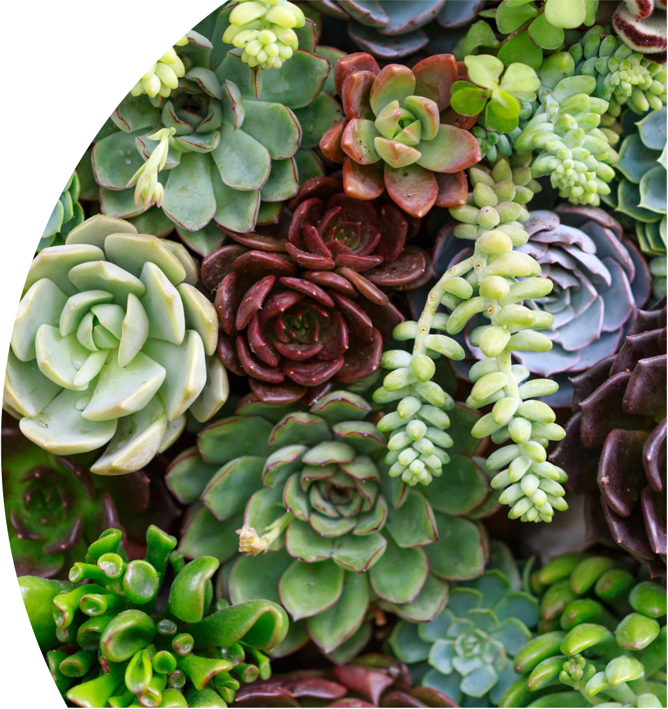

Home Garden
Motivation
As the coronavirus lockdown laws keep inside the boundaries of our home, there has been an explosion of interest in producing our own food.
Garden retails have been recent big sellers through outdoor outlets like Home Depots, Lowes, Ace hardware. I am a home garden fan.
All the vegetables on my table are grown by myself.
Next

The Change of Retail Sales During COVID-19
To better capture, COVID-19's effect on different retails sale include gardening retail. I using Dataset From Census.gov retail sales to show the overall impact of retail sales during Covid-19.
Garden equipment retail sales are in good shape, especially compare to those with a big decrease in sales.
Next
The Rise in Home Garden Retail
By using the dataset from Census.gov retail sales. I use a line chart to show the rise in Gardening Retail from 2014 to 2020 to show how big the increase during COVID-19.
In the past few years, the year-on-year growth trend of average sales is about 4% to 5%, and this proportion is less than 6%. The rapid development of the industry shows that people's interest in gardening is increasing day by day.
The substantial growth between 2019 and 2020 highlights the positive impact of the recent boom on the industry in 2020.
Next
The Retail Sales with largest Rises
Since we have seen an amazing increase in revenue growth in the home garden, I hope to have a clearer understanding of the monthly breakdown of the retail sales that are also doing well during COVID-19.
To this end, we compared the growth of gardening retail sales with the growth of e-commerce retailers and Beer & wine from 2019 to 2020 (Apr-Jun).
Next
Overall, based on the data we have seen, horticulture retail has performed well during COVID-19. I like to grow vegetables and flowers in the garden so that I can relax. I hope you can also have fun with the things you grow in the garden. Research shows that planting can help people improve their mental stress and physical and mental wellbeing.
Home